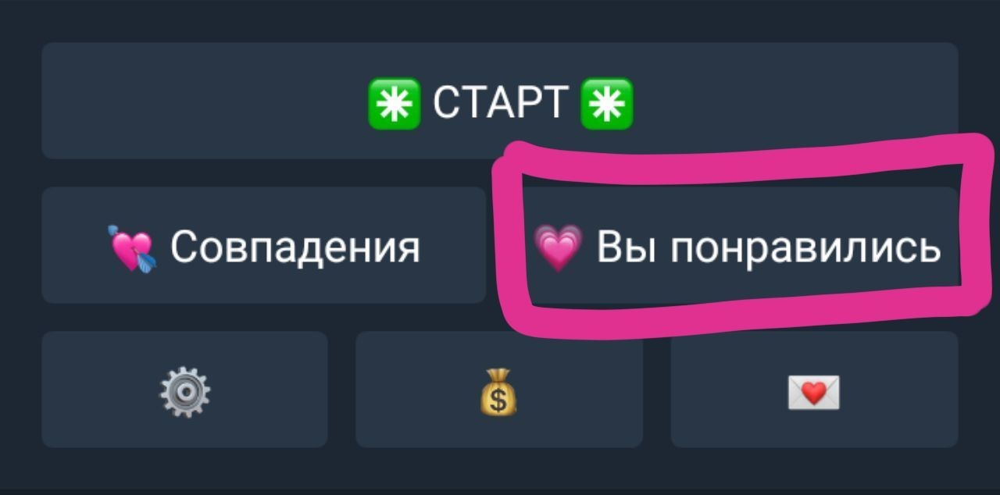
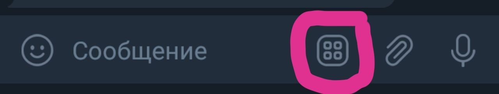

- About us
- Contact us
- Support

Если вы не нашли тут ответа на свой вопрос, вы можете обратиться в техподдержку сервиса @Flirtu_support.
Пожалуйста, заранее сформулируйте свой вопрос – опишите, что у вас случилось, в чем проблема и что именно вам непонятно, при необходимости прикрепите скриншот экрана.
Обращения типа «всё плохо», «что делать», «я не понимаю», «помогите, у меня не получается» и иные, не содержащие внятного описания проблемы, рассматриваться не будут.
Голосовые сообщения и сообщения, отправленные в секретном чате, рассматриваться также не будут.
@Flirtu_bot – это сервис знакомств. Вы нажимаете ✳️СТАРТ ✳️ и просматриваете анкеты тех, кто тоже ищет пару. Ставите 💚 тем, которые понравились. Когда они тоже поставят вам 💚, вы оба получите сообщение о 💞взаимной симпатии и 💌ссылку на чат, где сможете пообщаться напрямую. Если не хотите ждать, то можно воспользоваться платными услугами, чтоб повысить вашу популярность или упростить процесс знакомства.
Никак. Если оценка поставлена, то изменить или отменить ее нельзя. Так что, если сомневаетесь – лучше ставьте 💚. Прекратить общаться потом всегда можно )))
Потому что симпатия должна быть ВЗАИМНОЙ. Недостаточно, чтоб только вы поставили кому-то 💚. Этот человек тоже должен оценить вас 💚. Неважно, кто поставит 💚 первым а кто вторым, главное, чтоб вы ОБА сделали это. Только тогда у вас будет совпадение симпатий, после чего вы оба получите сообщение о 💞взаимной симпатии и 💌ссылку на чат, где сможете пообщаться напрямую.
Контакты пользователей – это личная информация, мы не можем распространять их. Только сами пользователи могут решать, кому сообщать свои контакты, а кому нет. Чат – это возможность пообщаться с собеседником и решить, хотите ли вы продолжать общение и дать ему свои контакты.
Монеты – это валюта бота для приобретения/открытия дополнительных платных услуг, которые могут ускорить и облегчить процесс знакомства или повысить вашу популярность:
- 🚀Priority – это функция, которая продвигает вашу анкету на приоритетные места в показе для всех пользователей, и они видят вас вне очереди. Вы сразу заметите, как повысилась ваша популярность и увеличилось количество совпадений )))
- 💗Вы понравились – это раздел, в котором отобраны анкеты ТОЛЬКО тех людей, кому вы УЖЕ понравились. Если вы не хотите смотреть в Старте все анкеты, подходящие вашим условиям поиска, или не хотите ждать, пока кто-то из понравившихся вам увидит и лайкнет вас в ответ – в этом разделе можно выбирать из тех, кто уже поставили вам 💚 и сразу же получать совпадение + 💌чат для общения.
- 🎁Подарок – это способ привлечь внимание вашей симпатии и предложить ему/ей вашу кандидатуру для оценки сразу же, в момент отправки подарка, а не в общем показе. Более того, если изначально вашу анкету отклонили, подарок даст вашей симпатии возможность изменить решение.
- Ускорение временного лимита при показе анкет для тех, кто не любит ждать
Кнопка «💗Вы понравились» находится в главном меню, справа внизу под кнопкой ✳️СТАРТ ✳️
Вам нужно зайти в раздел 💰Монеты. Там есть подробная инструкция, для чего их можно использовать и как приобрести. Возможны различные способы оплаты.
В настоящее время такая функция отсутствует. Возможно, она появится позже.
Вас никто не заставляет платить. Весь базовый функционал, необходимый для знакомства, доступен бесплатно. А пользоваться платными услугами или нет – это исключительно ваше желание и решение.
Нажимайте ✳️СТАРТ ✳️. Там собраны анкеты всех пользователей, подходящие под ваши условия поиска – и тех, кому вы уже понравились, и тех, кто вас еще не видел.
Ответить на этот вопрос может только тот, кто вам не отвечает. При получении сообщения пользователь получает звуковое уведомление о входящем сообщении, а также указание на непрочитанные сообщения в кнопках главного меню. Не отвечать могут по многим причинам - возможно, этот человек сейчас занят, не сидит постоянно в боте или уже познакомился с кем-то еще.
Позаботьтесь о том, чтоб ваша анкета выглядела привлекательно и интересно: загрузите хорошее, действительно хорошее селфи, яркое, красивое. Заполните раздел «О себе» - напишите немного о том, каких отношений вы ищете, о своих вкусах и интересах. Также вы можете воспользоваться функцией 🚀Priority для увеличения вашей популярности и показа вашей анкеты другим пользователям без очереди.
Потому что это фото или иные данные профиля не соответствуют правилам сервиса. Например – изображение или иные данные плохого качества / не содержит лица / взято из интернета / содержит адреса или контакты / относятся к лицу, не достигшему 18 лет или ребенку / содержат рекламу или торговые предложения и т.д.
С 18 лет.
В настоящее время пользователи не могут сделать этого самостоятельно. Для удаления профиля необходимо обратиться в техподдержку сервиса по адресу @Flirtu_support. В обращении необходимо прислать сообщение бота (или скриншот) с данными пользователя, которое бот присылает при входе в ⚙️Настройки ––> 👤Мой профиль. Также, пожалуйста, указывайте причину удаления – нам очень важно знать это, чтоб сделать сервис лучше ))
Нажмите сюда:
Если вы не нашли тут ответа на свой вопрос, вы можете обратиться в техподдержку сервиса @Flirtu_support.
Пожалуйста, заранее сформулируйте свой вопрос – опишите, что у вас случилось, в чем проблема и что именно вам непонятно, при необходимости прикрепите скриншот экрана.
Обращения типа «всё плохо», «что делать», «я не понимаю», «помогите, у меня не получается» и иные, не содержащие внятного описания проблемы, рассматриваться не будут.
Голосовые сообщения и сообщения, отправленные в секретном чате, рассматриваться также не будут.